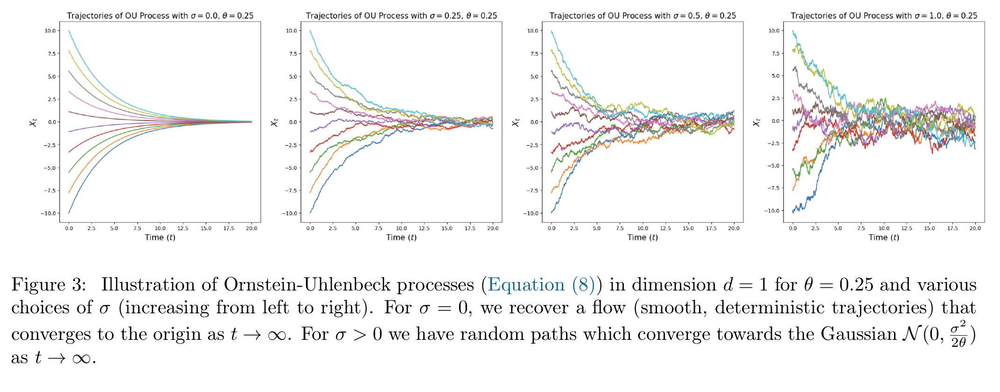
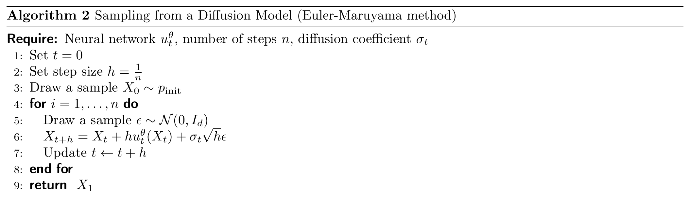
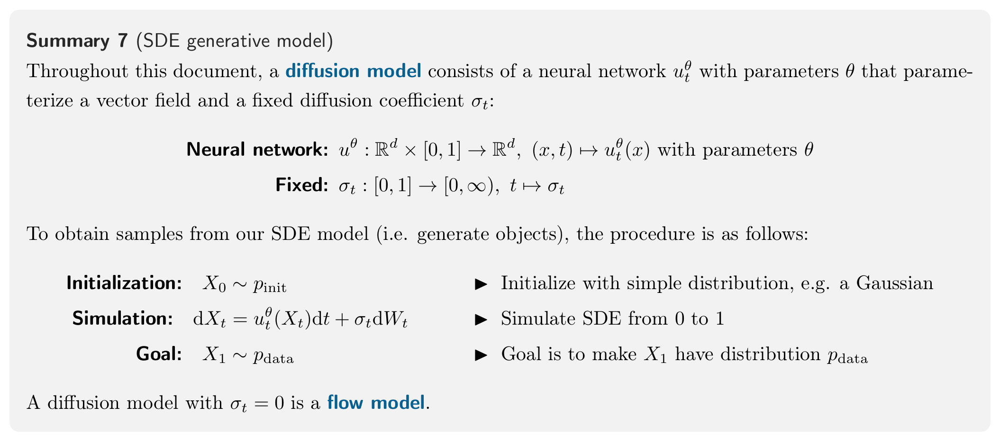

第 2.2 节 · 生成模型
Diffusion Models
Flow Model 用 ODE 描述样本的连续运动：在解唯一的条件下，给定起点和速度场，轨迹就确定了。Diffusion Model 在运动途中加入随机扰动，因而需要用随机微分方程 SDE 描述。
这一节的核心问题：怎样让带有随机扰动的运动，把简单分布中的样本变成数据样本？
先用布朗运动描述噪声，再把噪声加入 ODE 得到 SDE，最后通过逐步更新生成样本。漂移网络决定运动趋势，扩散系数控制随机扰动的强弱。
从随机轨迹到随机过程
Stochastic differential equations (SDEs) extend the deterministic trajectories from ODEs with stochastic trajectories.
SDE 是 stochastic differential equation，即随机微分方程。Flow Model 的起点也可以随机；这里新增的是运动过程中的随机性，所以两次从同一个起点出发，也可能得到不同轨迹。
A stochastic trajectory is commonly called a stochastic process (Xt)0≤t≤1 and is given by
Xt is a random variable for every 0≤t≤1.
X:[0,1]→Rd,t↦Xt is a random trajectory for every draw of X.
这两行从不同角度描述同一个随机过程。t∈[0,1] 是时间，Xt∈Rd 是该时刻的 d 维状态。
固定时间 t：不同运行在这一刻的位置可能不同，因此 Xt 是随机变量。
固定一次运行：每个时刻都有具体位置，t↦Xt 就是一条从时间映射到状态的样本轨迹。
In particular, when we simulate the same stochastic process twice, we might get different outcomes because the dynamics are designed to be random.
“同一个过程”指相同的概率规律；重复模拟是在这些规律下重新抽取路径，所以结果可以不同。
补充：用一个小例子区分随机变量与轨迹
如果需要把“第几次随机实验”也写进符号，可以用 ω 表示一次实验的随机结果，写成 Xt(ω)。于是两个视角可以明确地写为：
固定 t:固定 ω:ω⟼Xt(ω)是随机变量,t⟼Xt(ω)是样本轨迹.
例如，两次一维运行都从 0 出发。下面的数字只是帮助理解记号的一组示意值：
| 一次运行 | t=0 | t=0.5 | t=1 |
|---|---|---|---|
| ω1 | 0 | 0.3 | 0.1 |
| ω2 | 0 | −0.2 | 0.4 |
沿着一行看，是同一次运行经过不同时刻的状态；沿着一列看，是同一时刻在不同运行中出现的结果。表格只列出三个时刻，完整的连续时间过程则为区间内每个时刻都规定了状态。
Brownian Motion：布朗运动
SDEs are constructed via a Brownian motion - a fundamental stochastic process that came out of the study physical diffusion processes.
You can think of a Brownian motion as a continuous random walk.
布朗运动 Wt 可以看作连续时间的随机游走。我们用它提供沿途的随机扰动，而 Xt 表示受到扰动的样本状态。
完整定义
Let us define it: A Brownian motion W=(Wt)0≤t≤1 is a stochastic process such that W0=0, the trajectories t↦Wt are continuous, and the following two conditions hold:
Normal increments: Wt−Ws∼N(0,(t−s)Id) for all 0≤s<t, i.e. increments have a Gaussian distribution with variance increasing linearly in time (Id is the identity matrix).
Independent increments: For any 0≤t0<t1<⋯<tn=1, the increments Wt1−Wt0,…,Wtn−Wtn−1 are independent random variables.
完整条件共有四项：从零出发、路径连续、高斯增量、独立增量。其中 Wt−Ws 是时间段 [s,t] 内的随机位移；它均值为零，协方差为 (t−s)Id。Id 是单位矩阵，所以各坐标的增量方差都是 t−s。
独立性说的是不重叠区间的新增量相互独立；累积后的位置 Ws 与 Wt 通常仍有关联。布朗运动也称 Wiener process，因此常用字母 W。
关键推导①：为什么噪声乘 h？
We can easily simulate a Brownian motion approximately with step size h>0 by setting W0=0 and updating
Wt+h=Wt+hϵt,ϵt∼N(0,Id),t=0,h,2h,…,1−h.(5)
取 h=1/n，把区间 [0,1] 分成 n 步。每一步重新独立采样 ϵt∼N(0,Id)。缩放随机变量时，协方差乘缩放系数的平方：
Cov(aϵt)=a2Id⟹hϵt∼N(0,hId).
这恰好匹配长度为 h 的布朗增量：方差按 h 增长，标准差按 h 增长。式 (5) 因而给出了每一步随机位移的计算方式。
补充：方差、独立增量与连续路径的细节
一维增量与独立性
先看一维情况：
E[Wt−Ws]=0,Var(Wt−Ws)=t−s,SD(Wt−Ws)=t−s.
E 表示期望，即对许多次随机实验取平均；Var 是方差，衡量波动的平方大小；SD 是标准差，等于方差的平方根。均值为零表示正负方向在平均意义上没有偏好，并不表示每次位移都是零。
独立增量的条件则表示：如果把时间轴切成连续的小段，每一段新产生的随机位移，都独立于其他不重叠时间段的位移。例如：
W0.2−W0与W0.5−W0.2相互独立.
但 W0.2 与 W0.5 这两个“位置”通常不独立，因为后者包含前者已经累积的位移：
W0.5=W0.2+(W0.5−W0.2).
用第一项加上独立的新增量得到第二个位置，说明独立的是新产生的那一段，不是累积之后的两个位置。
Brownian motion is also called a Wiener process, which is why we denote it with a “W”.
用总方差检查：细分时间不应改变累计波动
这里始终模拟同一段时间 [0,1]。步长 h 越小，步数 n=1/h 越多；计算更精细，但终点应当仍服从同一个分布 W1∼N(0,1)。
在一维情况下，每一步 hϵkh 的方差是 h。由于各步独立，累加位移时可以把方差相加：
Var(k=0∑n−1hϵkh)=k=0∑n−1h=步数n每步方差h=1.
例如 h=0.01 时，100 步各贡献 0.01 的方差，累计仍为 1。单步噪声减小，步数增加，固定时长内的累计波动保持一致。
如果改用 hϵkh，每步方差就变成 h2，累计方差为 nh2=h→0：计算越精细，噪声反而越接近消失。这就是噪声必须按 h 缩放的原因。
式 (5) 在网格时刻能精确产生布朗运动的联合分布；把有限个点连成线，只是完整连续路径的近似。
连续为什么不代表有瞬时速度？
For example, while the paths of a Brownian motion are continuous (so that you could draw it without ever lifting a pen), they are infinitely long (so that you would never stop drawing).
这里要抓住的是：连续保证位置没有跳跃，却不保证存在普通瞬时速度。瞬时速度要求“位移除以时间”在时间间隔趋零时收敛到有限值。
布朗增量的标准差是 h，除以时间 h 后，差商的标准差反而增大：
SD(hWt+h−Wt)=hh=h1.
这为“位移越来越小，速度却未必稳定”提供直觉。严格结论是：布朗路径以概率 1 处处不可微；上面的尺度比较不是完整证明。
引文中的“无限长”描述的是不断折返累计出的运动长度（总变差），并不是位置跑到了无穷远；路径在有限闭时间区间上仍有界。这里累计的是一条路径的绝对位移，与上一段衡量终点分散程度的方差不同。
From ODEs to SDEs：从 ODE 到 SDE
The idea of an SDE is to extend the deterministic dynamics of an ODE by adding stochastic dynamics driven by a Brownian motion.
Because everything is stochastic, we may no longer take the derivative as in Equation (1a). Hence, we need to find an equivalent formulation of ODEs that does not use derivatives.
既然不能给布朗运动定义普通瞬时速度，就用小时间段内的随机位移来描述它。因此，先把 ODE 从“瞬时速度是多少”改写为“经过一小段时间，位置怎样变化”，再加入布朗增量，便自然过渡到 SDE。
前面的 h 确定每一步随机位移的波动尺度（标准差）；布朗路径的不可微性则解释了为什么要从位移入手。
关键推导②：从 ODE 的导数到 SDE 的位移
ut(x) 是速度场，输入位置和时间，输出速度。根据导数定义：
dtdXt⟺hXt+h−Xt⟺Xt+h=ut(Xt)=ut(Xt)+Rt(h),Rt(h)→0=Xt+hut(Xt)+hRt(h),h→0.
第二行用 Rt(h) 记录平均速度与瞬时速度的差异；导数存在，就意味着这份差异趋于零。两边乘 h 并移项，便得到第三行：新位置＝旧位置＋速度乘时间＋余项。略去余项，就是 Euler 近似。
式 (6)：加入布朗增量
We may now amend the last equation to make it stochastic: A trajectory (Xt)0≤t≤1 of an SDE takes, at every timestep, a small step in the direction ut(Xt) plus some contribution from a Brownian motion:
Xt+h=Xt+deterministichut(Xt)+stochasticσt(Wt+h−Wt)+error termhRt(h).(6)
新增的 σt(Wt+h−Wt) 是随机位移。这里 ut(x) 称为漂移系数，规定运动趋势；σt≥0 称为扩散系数，控制噪声强度。本节的 σt 只随时间变化，是标量。
给定当前状态，漂移位移是 hut(Xt)，新噪声的协方差是 σt2hId。因此每个坐标的噪声标准差为 σth。式中的 deterministic 指给定状态后按确定规则计算，并不表示不同路径上的漂移值相同。
where σt≥0 describes the diffusion coefficient and Rt(h) describes a stochastic error term such that the standard deviation E[∥Rt(h)∥2]1/2→0 goes to zero for h→0.
Rt(h) 是局部余项，不是另一次高斯采样。条件完整写为：
(E[∥Rt(h)∥2])1/2⟶0,h→0.
∥⋅∥ 是向量长度，E 是对随机结果取平均；这个量称为均方根，要求余项平均而言越来越小。它不总等于原句所称的标准差。
式 (7)：SDE 与初始条件
The above describes a stochastic differential equation (SDE). It is common to denote it in the following symbolic notation:
dXt=ut(Xt)dt+σtdWt.(7a)
X0=x0.(7b)
However, always keep in mind that the “dXt”-notation above is a purely informal notation of Equation (6).
式 (7a) 规定运动，式 (7b) 给定起点。不能将 dWt 当成普通导数乘 dt；SDE 的严格含义是下面的积分方程：
Xt=x0+∫0tus(Xs)ds+∫0tσsdWs.
它把位移分成两部分：普通积分累计漂移，随机积分累计经过缩放的布朗增量。式 (6) 对误差缩小速度的要求，需要系数满足额外条件；仅有 σt 连续还不够。下面的存在唯一性结论按这个积分方程理解。
Unfortunately, SDEs do not have a flow map ϕt anymore. This is because the value Xt is not fully determined by X0∼pinit anymore as the evolution itself is stochastic.
这里指的是：仅凭起点，无法再确定一条含噪声的轨迹，还需要知道沿途的随机扰动。它不否认更一般的随机流，只是不再有只输入起点的确定性流映射。
补充：余项是在记误差，随机积分是在做累加
这一段只梳理两个符号：hRt(h) 记录小步近似漏掉的位移，∫σsdWs 记录沿途噪声的累计结果。
余项：一步近似漏掉了多少位移？
先看 ODE。用当前速度乘时间，只是在估计这一小段的位移，因为速度沿途可能变化。把“实际位移”减去“估计位移”，剩下的就是余项：
漏掉的位移hRt(h)=实际位移Xt+h−Xt−估计位移hut(Xt).
所以，hRt(h) 是位置上的误差，Rt(h) 则是这份误差除以时间 h。导数存在时，Rt(h)→0，表示小段内的平均速度越来越接近当前瞬时速度。忽略位置余项，就得到：
Xt+h≈Xt+hut(Xt).
The derivation above simply restates what we already know: A trajectory (Xt)0≤t≤1 of an ODE takes, at every timestep, a small step in the direction ut(Xt).
这就是沿当前速度方向走一小步。到了 SDE，还要把已经计入的随机位移 σt(Wt+h−Wt) 扣掉，剩下的才是式 (6) 的 hRt(h)。余项不是额外采样的一份噪声。前面的均方根条件，就是把 Rt(h) 的长度平方、取平均、再开方，要求这个大小趋于零。
随机积分：怎样把沿途噪声累加起来？
把 [0,t] 分成小段，第 k 段的布朗增量记作 ΔWk=Wtk+1−Wtk。乘上这段起点的噪声强度，再把各段相加：
各段随机位移的总和k=0∑m−1σtkΔWk⟶累计随机位移∫0tσsdWs,0=t0<⋯<tm=t.
箭头表示所有小段的长度都趋于零；在本节只随时间变化的连续系数下，这个和按均方意义收敛，也就是它与积分之差的均方根趋于零。这种累加得到的量叫 Itô 随机积分。
看一个最简单的情况：噪声强度始终等于常数 σ。这时相邻增量中的中间位置会抵消，例如前两段：
σ(Wt1−W0)+σ(Wt2−Wt1)=σ(Wt2−W0).
累加到终点 t，再利用 W0=0，便得到：
∫0tσdWs=σ(Wt−W0)=σWt.
如果噪声强度随时间变化，各段就带着不同权重，通常不能这样直接抵消。回到 SDE 的积分式，它读作：当前位置＝初始位置＋累计漂移位移＋累计随机位移。
Theorem 5：SDE 解的存在与唯一性
If u:Rd×[0,1]→Rd is continuously differentiable with a bounded derivative and σt is continuous, then the SDE in (7) has a solution given by the unique stochastic process (Xt)0≤t≤1 satisfying Equation (6).
条件是：漂移 u 连续可微且导数有界，噪声强度 σt 连续。在这些条件下，积分形式的 SDE 存在唯一解。唯一性比较的是同一起点、同一组系数、同一条布朗运动驱动的解：它们以概率 1 相同。重新采样噪声得到另一条路径，与唯一性并不矛盾。
Finally, note that every ODE is also an SDE — simply with a vanishing diffusion coefficient σt=0. Therefore, for the remainder of this class, when we speak about SDEs, we consider ODEs as a special case.
令 σt≡0，噪声消失，SDE 就退化为 ODE；因此可以把 ODE 视为这里的特殊情况。
Example 6：Ornstein–Uhlenbeck 过程
Let us consider a constant diffusion coefficient σt=σ≥0 and a constant linear drift ut(x)=−θx for θ>0, yielding the SDE
dXt=−θXtdt+σdWt.(8)
A solution (Xt)0≤t≤1 to the above SDE is known as an Ornstein-Uhlenbeck (OU) process.
The vector field −θx pushes the process back to its center 0 (since the drift always points in the direction opposite to the current position), while the diffusion coefficient σ always adds more noise.
这个方程同时包含两种作用：−θXt 把状态拉回零点，σdWt 持续加入随机扰动。θ>0 控制回拉强度，σ≥0 控制噪声强度，两者都是常数。这里“constant linear drift”指线性规则不随时间改变。

图中横轴是时间，纵轴是状态，每条彩线是一条轨迹。四幅图固定 θ=0.25，让 σ 从左到右增大；时间延长到 20，用来观察长期变化。
最左侧 σ=0：只有回拉，恢复上一节的 Xt=e−θtx0，轨迹平滑地趋向零点。
加入噪声后：回拉仍然存在，但状态不断被扰动，轨迹在零点附近持续波动。
从左向右看：回拉强度相同，噪声越强，长期波动的范围越宽。
This process converges towards a Gaussian distribution N(0,σ2/(2θ)) if we simulate it for t→∞. Note that for σ=0, we have a flow with linear vector field that we have studied in Equation (3).
这里趋于稳定的是分布：当 σ>0 时，把大量运行在同一时刻的位置汇总起来，长期分布趋向 N(0,σ2/(2θ))，单条轨迹仍在波动。方差中的 σ2 表示噪声把分布撑宽，分母中的 2θ 表示回拉把分布收紧。
OU 过程展示了漂移与噪声共同影响分布。把这里固定的线性漂移换成可学习的网络，就能为更复杂的分布设计运动规则。
Simulating an SDE：Euler–Maruyama 数值模拟
A more intuitive way of thinking about SDEs is given by answering the question: How might we simulate an SDE? The simplest such scheme is known as the Euler-Maruyama method, and is essentially to SDEs what the Euler method is to ODEs.
关键推导③：从 SDE 得到可执行的采样更新
从式 (6) 到算法，只需要两步：用 hεt 生成这一小段的布朗增量，再略去局部余项 hRt(h)。于是，每一步留下的就是漂移位移与随机位移：
Using the Euler-Maruyama method, we initialize X0=x0 and update iteratively via
Xt+h=Xt+hut(Xt)+hσtεt,εt∼N(0,Id),(9)
where h=n−1>0 is a step size hyperparameter for n∈N. In other words, to simulate using the Euler-Maruyama method, we take a small step in the direction of ut(Xt) as well as add a little bit of Gaussian noise scaled by hσt.
取正整数步数 n，令 h=1/n，便把时间区间分成 n 步。沿漂移走一步，再加一份高斯噪声，就是 Euler–Maruyama 方法的全部更新规则。
每一步都使用当前的状态和时间计算系数，并重新独立采样噪声。式 (9) 的等号定义的是数值算法；有限步长时，算出的状态是连续 SDE 解的近似。减小步长改善的是离散误差，不会消除模型本身的随机性。
计算示例：实际走两步
用 Xt 表示数值近似，以区别于连续 SDE 的真解。
取 ut(x)=−x、x0=2、σ=0.5、h=0.1。每步的噪声尺度为 0.50.1≈0.1581。第一步：
X0.1=2+0.1(−2)+0.50.1ε0≈1.8+0.1581ε0.
用 ε0=1 演示，得到 X0.1≈1.9581。第二步的漂移必须改用新位置，并独立抽取 ε1。若用 ε1=−1 演示：
X0.2=X0.1+0.1(−X0.1)+0.50.1ε1≈1.9581−0.1958−0.1581≈1.6042.
这里的 1,−1 只是用于演示运算的噪声取值，实际会从连续的标准高斯分布中采样，既不是固定交替，也不是只允许这两个值。算法只有第一步使用初始位置 2，之后一直使用当前计算出的状态。
固定起点并重复第一步，X0.1 的分布为 N(1.8,0.025)，因为噪声方差是 σ2h=0.52×0.1。这把两个视角连接起来：一次计算产生一个位置，多次计算产生一个位置分布。
Diffusion Models：用 SDE 构造生成模型
We can now construct a generative model via an SDE in the same way as we did for ODEs. Remember that our goal was to convert a simple distribution pinit into a complex distribution pdata. Like for ODEs, the simulation of an SDE randomly initialized with X0∼pinit is a natural choice for this transformation.
pinit 是容易采样的初始分布，例如标准高斯；pdata 是目标数据分布。先采样起点，再让它沿 SDE 运动到时间 1，终点便是一次生成的结果。
To parameterize this SDE, we can simply parameterize its central ingredient — the vector field ut — via a neural network utθ. A diffusion model is thus given by
X0dXt∼pinit=utθ(Xt)dt+σtdWtrandom initialization,SDE.
用网络 utθ(x)=NNθ(x,t) 表示漂移：输入当前状态和时间，输出同维的漂移向量。这里的 θ 是网络参数集合，与 OU 例子中的回拉常数角色不同；σt 则预先指定。
记 Xt 的分布为 pt，目标是让 p0=pinit 逐渐变成接近 pdata 的 p1。训练负责调整漂移网络；采样时参数固定，只推进状态和时间，并抽取新的噪声。初始样本通常与后续布朗运动独立。
Algorithm 2：从 Diffusion Model 采样
把训练好的漂移网络代入 Euler–Maruyama 更新式，就得到完整的生成过程。给定网络 utθ、步数 n、预设的噪声强度函数 σt 和初始分布，按下面的算法采样；过程中网络参数保持固定。

第 1–3 行：初始化一次
令 t=0、h=1/n，把时间区间 [0,1] 分成 n 步，再抽取起点 X0∼pinit。例如初始分布是标准高斯时，这次生成就从一份高斯噪声开始。初始样本只抽一次，之后不断更新这个样本的状态。
第 4–8 行：重复“预测漂移、加入噪声、推进时间”
每一轮先独立抽取新的 ε∼N(0,Id)，然后执行第 6 行的核心更新：
Xt+h=Xt+漂移位移hutθ(Xt)+随机位移σthε.
utθ(Xt) 由当前位置和时间计算，乘以步长 h 后给出这一小步的漂移位移；另一项加入新的随机位移，大小由 σth 控制。随后令 t←t+h，下一轮使用刚更新的状态重新查询网络、抽取噪声。
第 9 行：返回终点样本
完成 n 次更新后，时间到达 1，返回 X1 作为这次生成的结果。图中的 Xt 是算法的数值状态，有限步长下得到的是连续 SDE 解的近似。
一次生成只抽取一次起点，每一小步都抽取新的噪声。网络共调用 n 次，逐步把初始样本更新为终点样本。
补充：对应的伪代码
h = 1.0 / n
x = sample(p_init)
for k in range(n):
t = k * h
epsilon = sample_standard_normal(d)
drift = model(x, t)
x = x + h * drift + sigma(t) * sqrt(h) * epsilon
return xSummary 7：SDE generative model

这张图把模型与生成过程对应起来：
学什么：漂移网络 utθ(x) 输入当前状态和时间，输出运动趋势；噪声强度 σt 预先指定。“fixed”表示它在这里不参与学习，仍可以随时间变化。
怎样生成：从简单分布抽取 X0，按 SDE 逐步更新，得到终点样本。计算机中用 Euler–Maruyama 实现这一步。
希望得到什么：许多次生成所得的终点分布接近 pdata。这是训练目标，不是给定任意网络就天然成立的结论；有限步采样还会带来数值误差。
生成模型要学习的是能改变样本分布的运动规则。漂移网络决定怎样移动，预设噪声决定怎样扰动，SDE 把两者连在一起，数值算法把这条连续运动规则变成可执行的采样过程。
当 σt≡0 时，SDE 在形式上退化为 Flow Model；对已经训练好的模型直接删掉噪声，一般会改变终点分布。
原框文字与公式（便于手机阅读、复制）
Throughout this document, a diffusion model consists of a neural network utθ with parameters θ that parameterize a vector field and a fixed diffusion coefficient σt:
Neural network:uθ(x,t)Fixed:σt:Rd×[0,1]→Rd,↦utθ(x)with parameters θ,:[0,1]→[0,∞),↦σt.
To obtain samples from our SDE model (i.e. generate objects), the procedure is as follows:
Initialization:Simulation:Goal:X0∼pinit,dXt=utθ(Xt)dt+σtdWt,X1∼pdata.
Initialize with simple distribution, e.g. a Gaussian. Simulate SDE from 0 to 1. Goal is to make X1 have distribution pdata.
A diffusion model with σt=0 is a flow model.
References
[1] Peter Holderrieth and Ezra Erives. An Introduction to Flow Matching and Diffusion Models. MIT 6.S184: Generative AI With Stochastic Differential Equations, 2026.
相关内容：第 2.2 节 Diffusion Models，第 10–13 页。
随机积分与解的定义补充：Benjamin Fehrman, Stochastic Differential Equations，第 7 节。